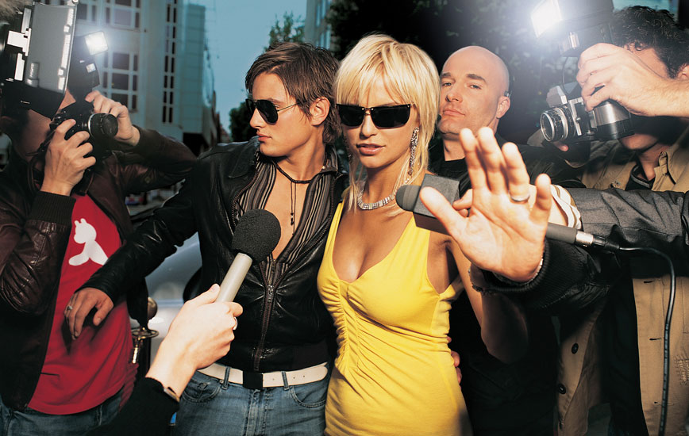

Figure 14.1
The U.S. Constitution’s First Amendment guarantees Americans freedom of the press, which many would agree is an important ingredient in upholding democratic principles. Freedom from government censorship allows the news media to keep citizens informed about the state of their society. But when does the press take this freedom from censorship and restriction too far? The death of Princess Diana in 1997 brought fierce criticism against the paparazzi, and tabloid reporting in general, when it was found that the princess’s car had been pursued by paparazzi vehicles before the crash that caused her death. In June 2011, Tori Spelling crashed after being chased by paparazzi. She was pregnant at the time and feared for her unborn child. In July 2011, paparazzi were detained for chasing Paris Jackson (Michael Jackson’s daughter). Despite these incidents, the public’s interest in celebrity gossip has not diminished; rather, the growth of online news sources has led to a proliferation of celebrity gossip websites.
A potential concern regarding this trend is that tabloid-style gossip is not confined to public figures in the entertainment industry; it can have far-reaching consequences. As noted in Chapter 2 "Media Effects", the firing of General Stanley McChrystal from his post as commander of all U.S. and NATO forces in Afghanistan in June 2010 was nearly the direct result of an article in Rolling Stone, in which he made less-than-flattering comments about Vice President Joe Biden.Michael Hastings, “The Runaway General,” Rolling Stone, June 25, 2010, http://www.rollingstone.com/politics/news/17390/119236. McChrystal himself did not directly criticize the president or the administration’s policies; instead, his views were inferred from comments made by his aides.MSNBC, “Obama, McCain, Kerry Comment on McChrystal,” June 22, 2010, http://www.msnbc.msn.com/id/37850711/ns/us_news-military/. However, this was sufficient to cost him his job. In recent years, tabloid reporting has become increasingly invasive and sometimes dangerous.
Should the government begin placing stronger regulations on tabloid reporting as privacy advocates have argued? The Constitution, after all, while guaranteeing freedom of the press, also has been interpreted as guaranteeing individuals certain rights to privacy, and most journalists would agree that standards of ethical journalism include efforts to protect these rights. However, some paparazzi photographers and celebrity journalists disregard journalistic codes of ethics in their efforts to get a story.Patrick J. Alach, “Paparazzi and Privacy,” Loyola of Los Angeles Entertainment Law Review 28, no. 3 (2008): 205. Many argue that because celebrities are “public figures,” the same privacy rights that protect the general public don’t apply. Us Weekly’s editor in chief, Janice Min, has argued, “A celebrity is like an elected official. If you’re getting paid $20 million a movie, you have to rely on public goodwill to stay in office. You have to accept the fact that you’re a public commodity.”Donna Freydkin, “Celebrities Fight for Privacy,” USA Today, July 6, 2004, http://www.usatoday.com/life/people/2004-07-06-celeb-privacy_x.htm. Harvey Levin, editor in chief for the popular celebrity gossip blog TMZ, would agree. When discussing invasions into the private lives of stars like Britney Spears, Levin proclaimed that “Britney is gold; she is crack to our readers. Her life is a complete train-wreck and I thank God for her every day.”New York Times, “TMZ Productions,” Times Topics, July 7, 2009, http://topics.nytimes.com/top/news/business/companies/tmz_productions/index.html?scp=1-spot&sq=tmz&st=cse.
On the other side of the debate, many argue that the public-figure limitation should be balanced with the consideration of a story’s newsworthiness. As law professor Patrick J. Alack has argued, “If ‘social value’ is what constitutes newsworthiness, it is hard to imagine a more perverse concept of social value that incorporates … Paris Hilton’s late-night dining preferences or Lindsay Lohan’s driving habits.”Patrick J. Alach, “Paparazzi and Privacy,” Loyola of Los Angeles Entertainment Law Review 28, no. 3 (2008): 237.
TMZ, a website that publishes celebrity news in real time, was launched in 2005, and since its creation the site has received numerous criticisms from more prestigious news sources like The Washington Post and ABC News. Yet Thane Burnett, reporter for The Toronto Sun, admits that “despite the sideways glances, mainstream news services prowl TMZ’s site for coverage.”Thane Burnett, “Caught on Camera,” Toronto Sun, May 12, 2009, http://www.torontosun.com/entertainment/celebrities/2009/05/12/9429036-sun.html. With the immediacy of Internet news coverage, mainstream media outlets face increasing pressure to release major news while it is still fresh. That pressure is compounded by celebrity gossip sites like TMZ that may resort to unorthodox methods to gather information; the shelf life of breaking news is growing increasingly shorter.